Image Warping and Mosaicing
Part A
Introduction
In the first part of this project, we explore how to create a panorama by stitching together several different images. We do this by computing the homographic transformation between each image and some shared image plane (in this project, we use the first image). As a sanity check of this transformation, we try warping images of rectangular objects at various perspectives to the rectangular straight-on perspective. After this sanity check, to make a panorama, we transform each image onto the plane of the first image, creating a big enough output image to fit all of the input image. Finally, we blend the images using a 2 layer Laplacian stack.
Part 1: Capture Images
I mostly used my iPhone to capture images for this project, though I also tried using an old DSLR since I thought shooting in manual mode with minimal computational photography may make the seams of stitching less of a problem, though this turned out to not really be the case. It was also very hard to get the same center of projection considering how big the camera was. Thus, all images in this project were shot on my phone, except for an attempt at a panorama of a planar target with a moving center of projection. To avoid redundancy, I will show the images before the finished panorama rather than including them here.
I also used Adobe Lightroom to edit my DSLR pictures after taking them, since my exposure was not quite correct, as I was shooting in manual mode. I applied the same edits to each picture in the panorama. Since my camera shoots in RAW and my iPhone shoots in HEIF, I use Apple Preview to resize images to about 1000 pixels in the larger direction, and convert the format to JPG.
Part 2: Recovering Homographies
To mark the correspondence points, I used this tool to mark the correspondences on my images. We see that we can rearrange the equation p’=Hp to get two linear equations in terms of the parameters of the homography matrix. Below is the derivation:
 Thus, we see that each point correspondence gives two rows to add to the matrix equation. We use enough points so this is overdetermined, and then solve for the best homography matrix by minimizing the least squares loss.
Thus, we see that each point correspondence gives two rows to add to the matrix equation. We use enough points so this is overdetermined, and then solve for the best homography matrix by minimizing the least squares loss.
Part 3: Warping Images
Similar to Project 3, we warp the image to the desired plane using inverse warping. Given a target plane t and a source plane s, we have the inverse transformation homography H_ts from target to source, and H_st from source to target. We apply H_st to all boundary points in the source image to get the size of the image warped to the target plane. Then, we take all points in the polygon (quadrilateral, using skimage.draw.polygon) formed by these boundary points, and use H_ts to find the position in the source image. Then, we use scipy.interpolate.griddata to interpolate the value of these positions in the source image from the neighbors. We mark pixels with no value with zero, and also output the bounding quadrilateral of pixels with values from our warping function to be used to compose mosaics later.
Part 4: Image Rectification
To verify that the homography and warping are correct, we rectify objects that are known to be rectangular.
 |
 |
| Magazine Source Image |
Magazine Rectified Template (US Letter Aspect Ratio) |

|

|
| Magazine Rectified |
Magazine Rectified (Cropped) |
We see that the image is successfully rectified, though the perspective projection is quite extreme so the image gets quite large. When we crop in, its looks pretty good, although not quite perfect, maybe because there are only four points so the matrix is not that stable. Its hard to find additional correspondences that can be added accurately. So, for the second test, we use a picture of an iPad displaying a piece of graph paper and the underlying graph paper image. There are way more places to add correspondences, which should lead to better results.
 |
 |
| Graph Paper Source Image |
Graph Paper Template |

|
| Graph Paper Rectified |
This result looks great, which shows how we should use as many points as possible to get the most ideal result.
Part 5: Mosaic Blending
I am going to illustrate my process of these two images I took from the Berkeley I-House courtyard:
 |
 |
| I-House Courtyard Image 1 |
I-House Courtyard Image 2 |
We warp each image to the image 1 projection plane. Then, we make the size of the new canvas such as both images mapped to the image 1 projection plane can fit, and put the images in the appropriate position. This gives the following warped and shifted image 1 and image 2 in this new shared plane:
 |
 |
| I-House Courtyard Image 1 Warped |
I-House Courtyard Image 2 Warped |
Then, to do the blending, we first create a mask for each image that is 1 at the center image and linearly goes to zero at the edge of image image. We compute this using the cv2.distanceTransform function. This gives the following masks for each image:
 |
 |
| I-House Courtyard Image 1 Mask |
I-House Courtyard Image 2 Mask |
Then, I convert this to a binary mask by setting 1 to be places where the image 1 mask is greater than the image 2 mask. I don't want a sharp edge, so I also apply a Gaussian blur to this binary mask with sigma of 1 and kernel size of 7. This gives the following mask:
 |
| I-House Courtyard Blurred Mask |
I use this mask to do multi-resolution blending with a Laplacian stack like in Project 2, except with only two layers, which is sufficient here. I use a sigma value of 10 for the blending. The two warped images above are the source images, and the mask above is the mask. This leads to the following final stitched image:
 |
| I-House Courtyard Panorama |
We see that the edge is nice and gradual between the two images, and that the alignment is very good. Unfortunately, the colors are quite different between the two images, which does make the seam somewhat noticeable. A direction for future work could be to try to automatically adjust the color intensities to make the gap less obvious.
Now, I show two other mosaics completed with two images with the same process:
 |
 |
| Piedmont Avenue Image 1 |
Piedmont Avenue Image 2 |
 |
| Piedmont Avenue Panorama |
We see that the seam is much less visible here because the phone did not adjust the exposure and color as much.
 |
 |
| I-House Steps Image 1 |
I-House Steps Image 2 |
 |
| I-House Steps Panorama |
We see that this merge also does not have a clear seam.
| 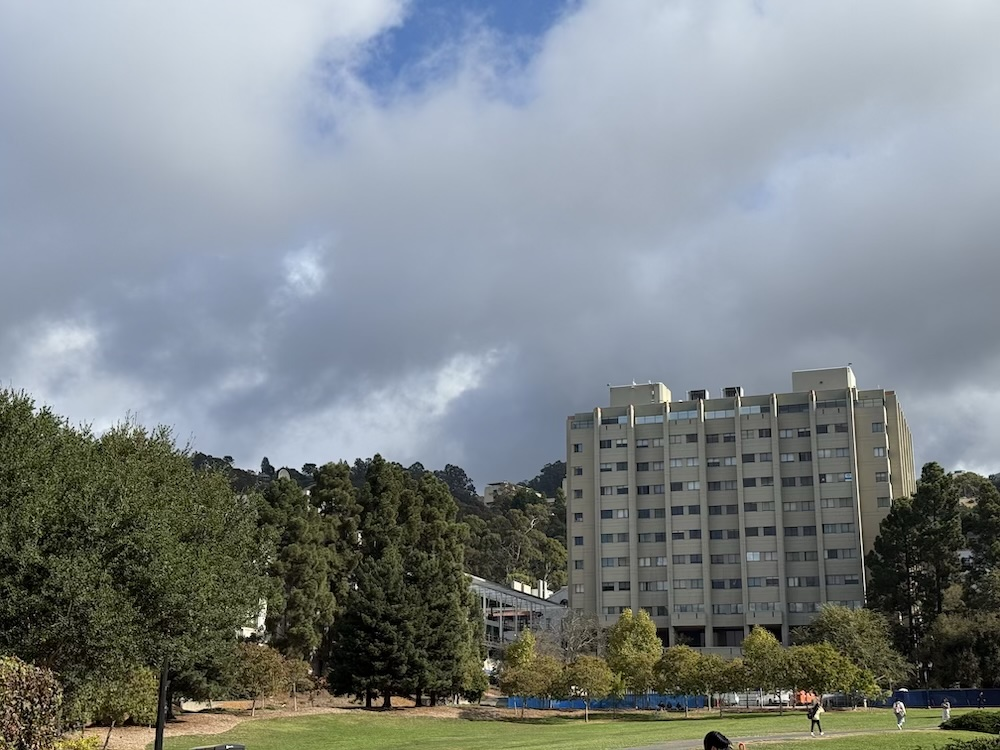 |
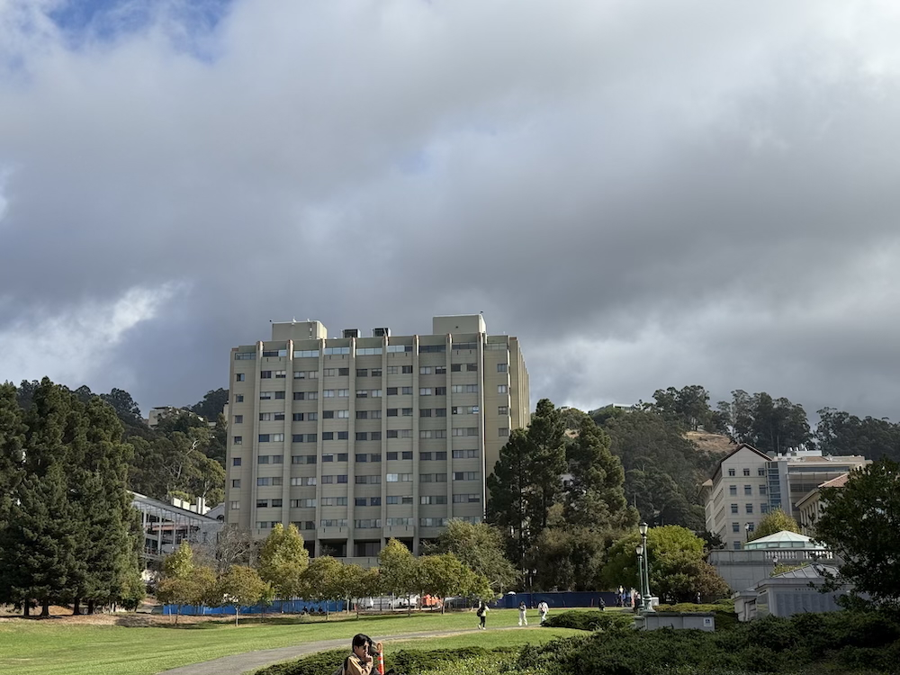 |
| The Glade Image 1 |
The Glade Image 2 |
| 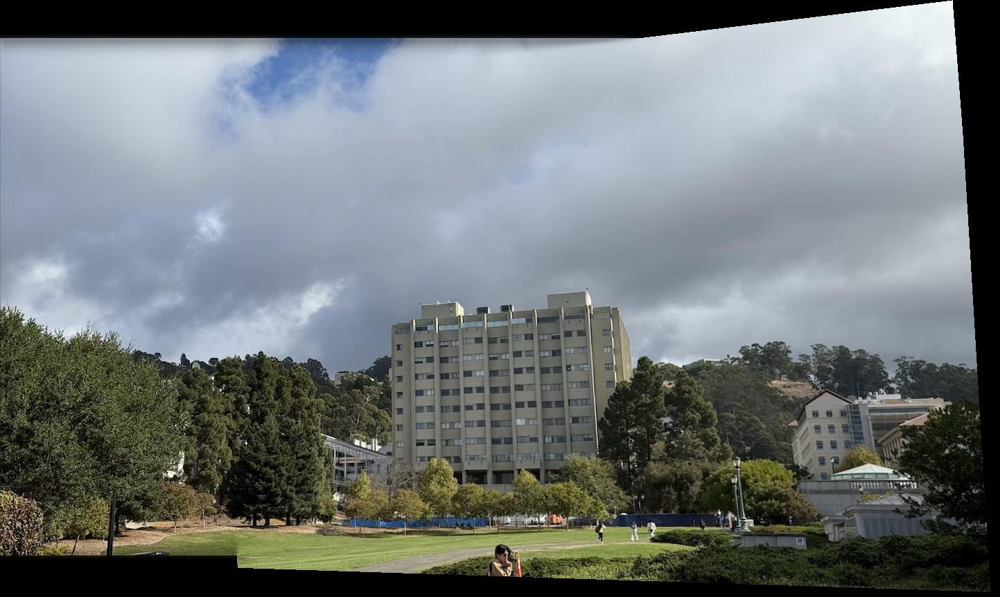 |
| The Glade Panorama |
We see this image also does not have a visible seam.
I also tried doing a mosaic of three images together. These were shot on a DSLR, where it was hard to maintain the same center of projection, so I tried a planar mosaic. I merged images two at a time, image 1 and image 2, then the combined with image 3. The correspondences are between images i and i + 1 for i in [0, 1]. Thus, for merging image 2 and image 3, the points in image 2 need to be adjusted to the location of image 2 in the combined image. We note that this is just the H_21 homography matrix times the image 2 correspondences, plus the offset of image 2 from the top left corner of the new canvas. This can easily be generalized for arbitrary numbers of images by continuing to merge pairwise, since the matrix H_n1 will have been calculated at the previous step when merging image n to the canvas on the image 1 image plane. Below are the three images and final merged image:
 |
 |
 |
| Berkeley Law Image 1 |
Berkeley Law Image 2 |
Berkeley Law Image 3 |
 |
| Berkeley Law Panorama |
We see that the transformation starts to become slightly incorrect for the third image, likely because the image is not perfectly planar (the letters edge out and are indented beneath the ledge).
Part B
Introduction
We extend Part A by performing the same merging process, but instead extract correspondences automatically. We first identify interest points that are in areas of lots of local change. Then, we filter these points using Adaptive Non-maximal Suppression, extract patches around these points, and then match points based on nearest neighbor l2 distance of the patches, rejecting outliers. Then, I use RANSAC to compute the best homography from these matched points.
Part 1: Feature Selection
To find features in the image, we first use a Harris corner detector to extract points where moving in any direction will lead to significant changes in intensity. This is desirable since it is likely to find points that are more distinctive, and thus easier to be matched. In lecture, we showed that the eigenvalues of the second moment matrix approximate the maximum and minimum intensity change moving in different directions from the target point. This means that we can estimate "corners" by thresholding the ratio of the product of the eigenvalues of the second moment matrix to the sum of the eigenvalues. We use the provided starter code to compute these points. I will display automatic matching process on the following two images:
| |
|
| Piedmont Avenue Image 1 |
Piedmont Avenue Image 2 |
Below are the corners detected by the Harris detector. We do not match anything within 25 pixels of the edge, and perform local max filtering of radius 1.
| 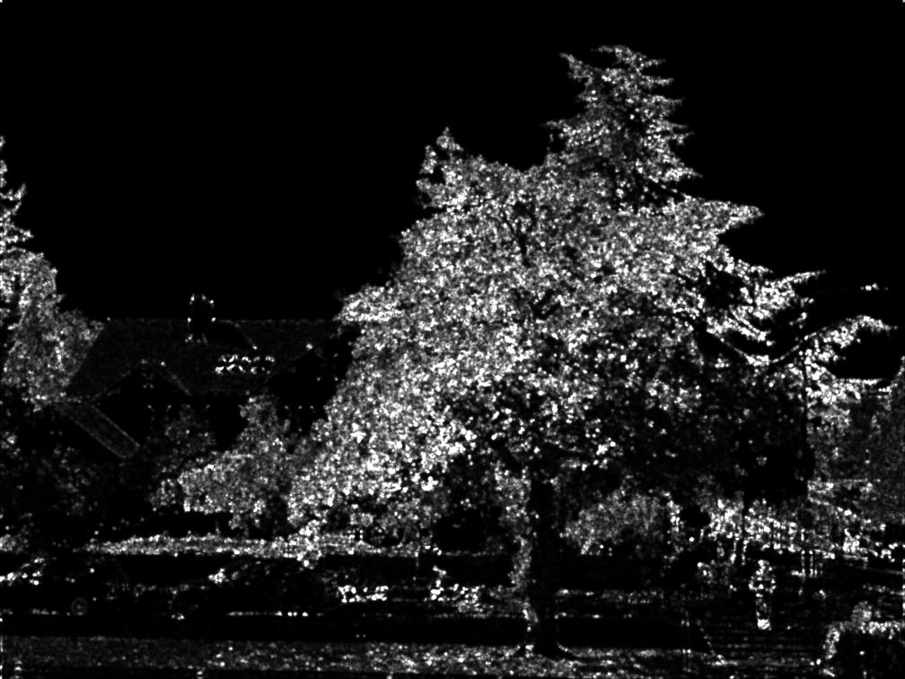 |
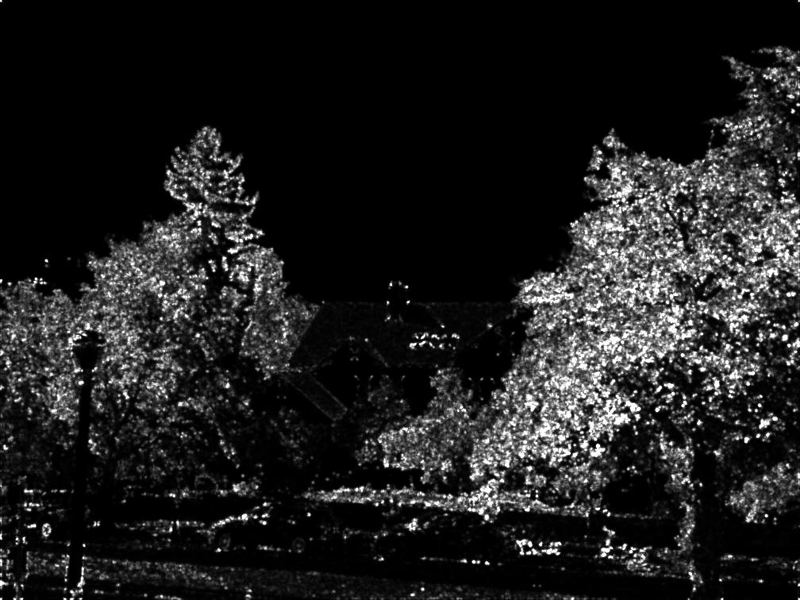 |
| Piedmont Avenue Image 1 Harris Scores |
Piedmont Avenue Image 2 Harris Scores |
| 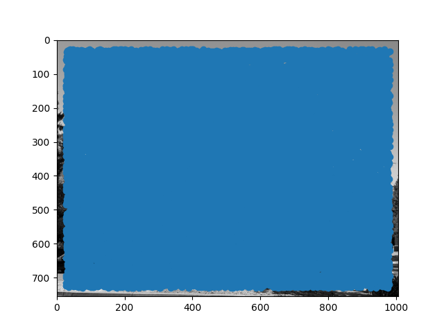 |
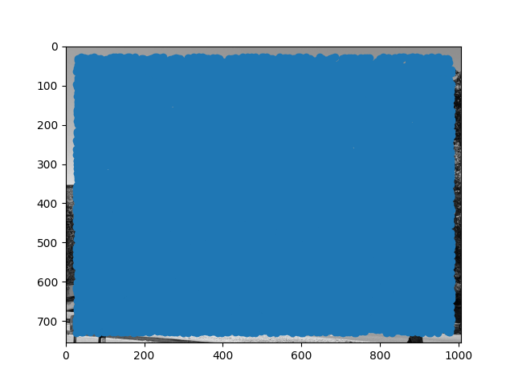 |
| Piedmont Avenue Image 1 Harris Points |
Piedmont Avenue Image 2 Harris Points |
We can see that Harris corner detection covers the entire image in potential points, on the order of about 20,000 points for each image. This is far too many points to do analysis, so we first need to do filtering. One naive way would be to select points that are the maximum in some fixed radius, but it is not clear a priori what radius to pick. Additionally, this may not be robust if there are many points of similar intensity. Instead, we use adaptive non-maximal suppression. We compute the distance from every point to the closest neighbor for which c (I use 0.9) times the neighbor's Harris score is greater than the score of the current point. In math, this looks like the following:
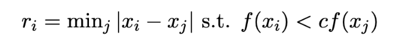
We then take the 500 points that have the highest value of r_i, since these points are the maximum over the largest area. This is better since we can efficiently find an effective radius that gives the desired number of points, and also make suppression robust to points of approximately similar corner values.
After ANMS, we get the following images:
| 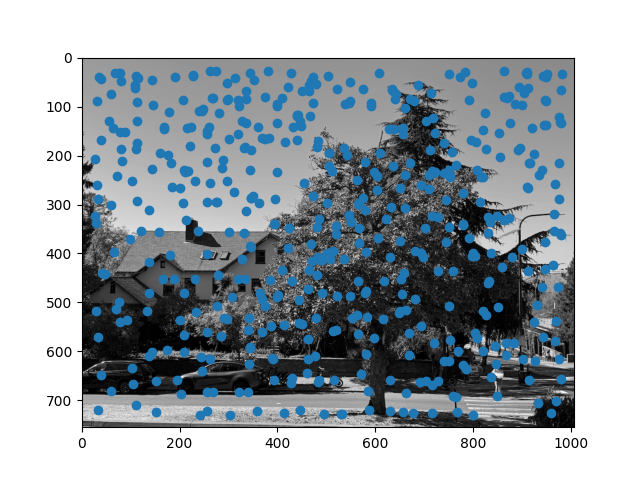 |
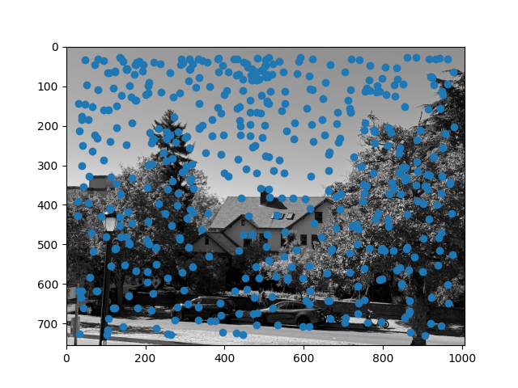 |
| Piedmont Avenue Image 1 ANMS Points |
Piedmont Avenue Image 2 ANMS Points |
We see that this gives a somewhat uniform distribution of interest points over the image, as desired.
Part 2: Feature Extraction
To make the extracted features less sensitive to the exact location of each keypoint, we first downsample the image by a factor of 5 (using skimage.transform.resize), and then extract an 8x8 pixel patch, centered at the corner point. The corner point is not integral, so we take the floor of the point, and then extract pixels between 3 pixels lower and 4 pixels higher in each direction. Next, to get invariance to brightness changes, we normalize the intensity of each patch. We display the extracted features below, before normalization so that the color intensities can be displayed (otherwise it will not be in the range of 0-1).
| 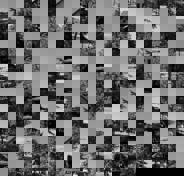 |
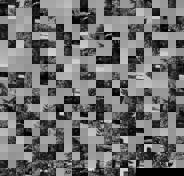 |
| Piedmont Avenue Image 1 Extracted Features |
Piedmont Avenue Image 2 Extracted Features |
Part 3: Feature Matching
To match features, we first use the provided dist2 function from the starter code to get the l2 distance between every pair of features. Then, we compute the nearest neighbor and second nearest neighbor of each feature in each image. We remove all matches that are not symmetric, as well as all matches for which the ratio of the first nearest neighbor error to the second nearest neighbor error is greater than some threshold (for the correspondence in either image). Empirically, we find that a threshold of 0.5 works reasonably well.
For the pair of images above, 160 features have symmetric matches, 26 features are symmetric and pass the threshold test in image 1, and 16 are symmetric and pass the threshold test in both images. The final matches for both images are shown below:
| 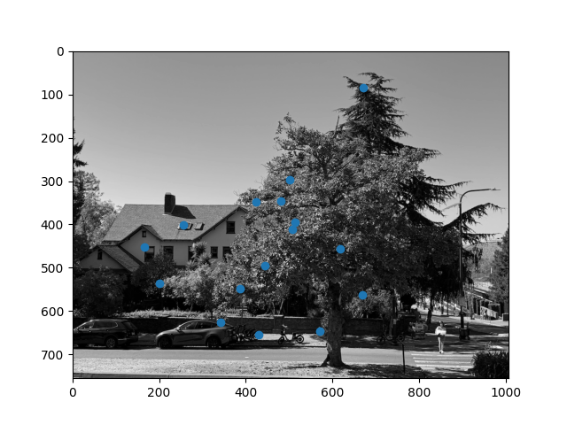 |
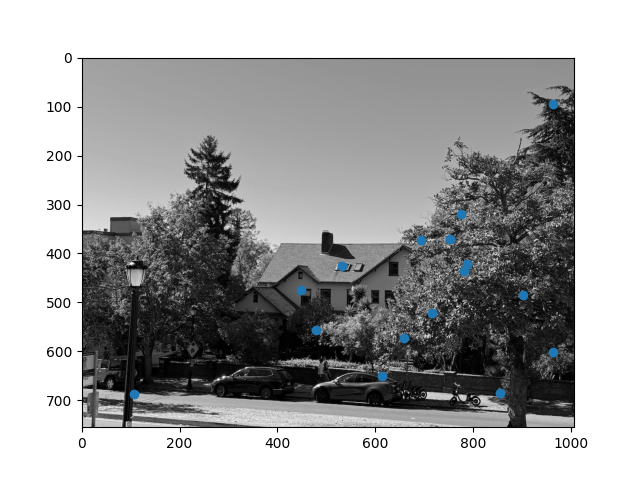 |
| Piedmont Avenue Image 1 Matched Points |
Piedmont Avenue Image 2 Matched Points |
By visual inspection, it appears that almost all correspondences identified do in fact match.
Part 4: RANSAC
To improve the robustness to outliers (it is unlikely that all correspondences identified will be correct), I use RANSAC (random sample consensus). I repeatedly sample a random set of 4 correspondences, and compute the homography from image 1 to image 2 for these four points (by solving the linear system, instead of least squares, since the system is no longer overdetermined). Then, I compute the squared error for each transformed image 1 point and the corresponding target image 2 point. I calculate the number of inliers as the number of points where this error is less than a threshold, empirically I find 1 works well. I repeat this process and save the homography that has the most inliers, breaking ties with the squared error. I also compute the inverse homography (image 2 to image 1) on the points that led to the best forward direction homography transformation. I run this process for one million steps. For this Piedmont Avenue image, there are 16 correspondences, and the best homography has 12 inliers. Based on visual matching, this suggests that the threshold of 1 may be a bit conservative for defining an inlier.
Part 5: Final Automatically Stitched Mosaics
The process for merging the images given the homographic transformation is identical to part a. This yields the following final panorama:
| |
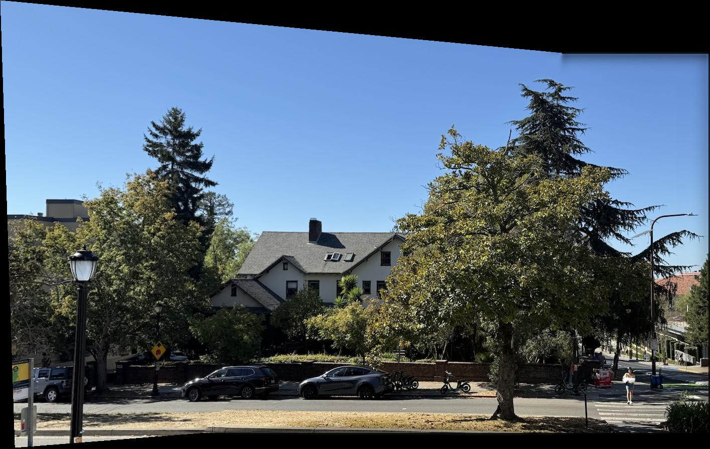 |
| Piedmont Avenue Final Panorama (Manual) |
Piedmont Avenue Final Panorama (Auto) |
We see that the automatically stitched panorama matches the manually stitched version, showing that the method successfully identified correct correspondences to find the homographic transformation.
The final results for other pairs of images are shown below:
| |
|
| The Glade Image 1 |
The Glade Image 2 |
| |
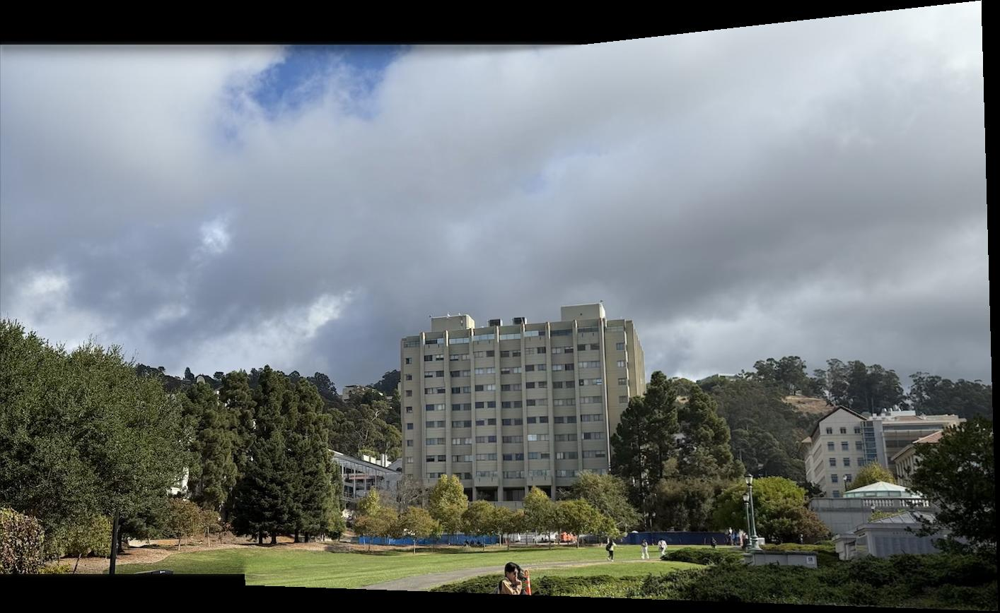 |
| The Glade Panorama (Manual) |
The Glade Panorama (Auto) |
We see that for these two additional pairs of images, the manual panorama result is the same as the automatic result.
Part 6: Analysis of Failure Cases
We note that while the system is somewhat robust, it is not perfect. In particular, rotation invariance was not implemented in this project, so I noticed sensitivity to rotations of the camera other than those parallel to the horizon. Additionally, the images of the I-House courtyard from part A also did not work. They did not find enough correspondences to compute a homography. I think this is because the different interest points are largely corners of identical windows that are hard to differentiate based on l2 distance of the extracted patches. I think that to fix this it is necessary to consider more than just local structure, such as how the different correspondences relate to each other.